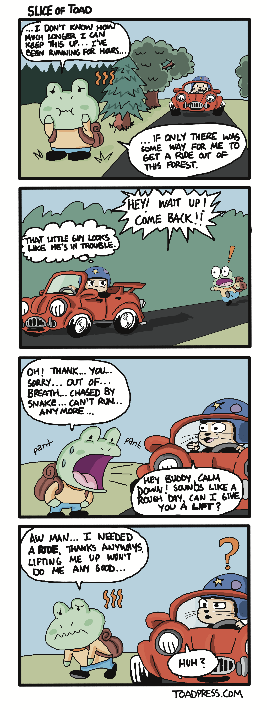

toad press
tariq's online (almost) daily press
a small personal site that shares human vibes. 08-02-2026-SUN version
|
Monday's Entry: 08-17-2026Yesterday, while taking care of chores around the home, I put in some headphones and searched my phone for a good album to play. When doing simple tasks I find it easier to pass the time while listening to something that is not chaotic, something that enriches my mind while my body carries out the cleaning and organizing. I’m not sure how my thumbs led me there, but I ended up looking at ‘The Legend of Zelda: Ocarina of Time’ soundtrack on my phone screen and clicked ‘play.’ The funny thing about listening to an old video game soundtrack is the memories it plants in your mind while you’re listening to it. The soundtrack was arranged in chronological order, so I happily smiled as the songs carried me through Link’s journey from start to finish. What I ultimately realized is that I was essentially reliving the game, or more accurately, allowing my mind to remember myself playing the game many years ago. It is very interesting to note that, while listening to the songs alone, I was able to visualize different areas in Hyrule, different dungeons, and different characters. What became even more interesting, however, is that as the tracks progressed and as my listening time added up, it was almost as if my memory recall improved as well. I started remembering things on a small scale in addition to those on a larger one. I began remembering the sound of Gold Skulltulas scurrying on walls, hidden in plain sight. I also remembered different mechanics like planting magic beans and seeing them grow into full plants once the Song of Time is played and the master sword is pulled from its pedestal. I remembered different battles and situational requirements for defeating enemies simply by hearing specific battle tunes again. I also recalled aspects of the story that were long trapped in the recesses of my mind. This short column is obviously about my long-held love for ‘The Legend of Zelda: Ocarina of Time’ but it is also a testament to the power music has at unlocking hidden or forgotten memories. I believe this is a facet of life that is exclusively attained as we age. Oftentimes, people wince at the thought of getting older or growing up. There are many reasons to support these thoughts. However, being able to listen to a soundtrack filled with tracks that I haven’t heard in over twenty years and, simultaneously, being afforded the opportunity to recall those fond or heart racing memories is a true gem associated with growing. This cathartic response is not easily reached when we are young, it only is available to us as we tally days and months and years on our slate of life. It may not be easy to sit down and replay those old games of our youth, but it is a lot easier to listen to a soundtrack and revel in the delightful memories that flood our minds. And, I think it is important to engage in this practice, whether it is with an old video game soundtrack or one associated with a movie or TV show, or even an old album. This is an important way to combat some of the sadness or longing for ‘times long past.’ Yes, those days are history, but they are not gone, not in all aspects. The emotions and memories of those days and experiences are lying dormant in our mind. Just like Link needs a special boss key to enter the final room of the dungeon, these special and uniquely personal blips of emotional release sometimes just require that special song to allow entrance. Lately I’ve been thinking about the past and the fun of my childhood. I am thankful that my thumbs led my phone to that old soundtrack to remember that the fun is still here, in the present. It’s only a click and a smile away. Thank you for reading Toad Press today. I hope you have a great week ahead of you. One that is hopefully not as challenging or confusing as the Water Temple. |
Slice of Toad #3: Lift |
Thursday's Entry 08-06-2026Today I am thinking about time. It’s a wonder how it just passes so quickly sometimes, while at others it moves as slow as a snail. I woke up this morning and realized the sun and moon have already performed their dance several times this week - it is Thursday already! The next thought - which, depending on how sleepy I am, can take a few minutes - was another exclamation altogether: it’s trash day! I forgot to take out the trash! While rounding up trash bags around the home and ensuring I didn’t forget anything (spoiler: I forgot something) I reflected on time. It appears that, as we age, time seems to pass quicker. ‘Seems’ is the right word. I believe the phenomenon deals with relativity and how our brain processes time passage the longer we are alive but, alas, I am not a doctor of philosophy. But I think this is only one side of the coin. The other side is as plain as bright green copper oxidation. Time flies when you’re having fun. Despite our age, be it old or young or somewhere in between, if we happen to trip and stumble upon or deliberately seek out a fun experience, the clock begins to speed up. This was the case when I was younger and would play video games all day, it is also the case when I’m out with my wife hopping between cafes to try different pastries. I suppose there is also a third side, but that creates a coin that doesn’t really exist in our reality, so forgive me for the bad analogy. The third is that time tends to slow during the serious moments of our lives. When we are waiting for a loved one’s medical test results. When we await the start time for a final exam, nervous and palms sweaty in a crowded exam hall. When we stare nervously at our watches or phones while waiting for a first date. When the world quiets around us and lowers the shades for an important conversation. Time is really funny, the way it works. Einstein said that it is relative (I think, I really hope it was him that said this) and there is a lot of truth to that. For something so constant, it is incredibly and comically variable. Speaking of time, I recently learned that double-spacing after sentences is not something that needs to be done anymore while typing. My wife explained this to me. I majored in English and believed I knew more than her (a big mistake) but turned to the internet for an answer. It turns out, I was wrong. Modern screens don’t require the ancient analog input of an additional space to make a paragraph appear to flow. I realized I was taught by people who learned how to type on typewriters. I realized I am…aging. I realize now, too, that I continue to double-space after periods because old habits are hard to break. We can start with this one right here! Thank you for reading Toad Press! I have been eating a lot of watermelon lately, and reminiscing on old cartoons. Enjoy your summer! -Tariq |